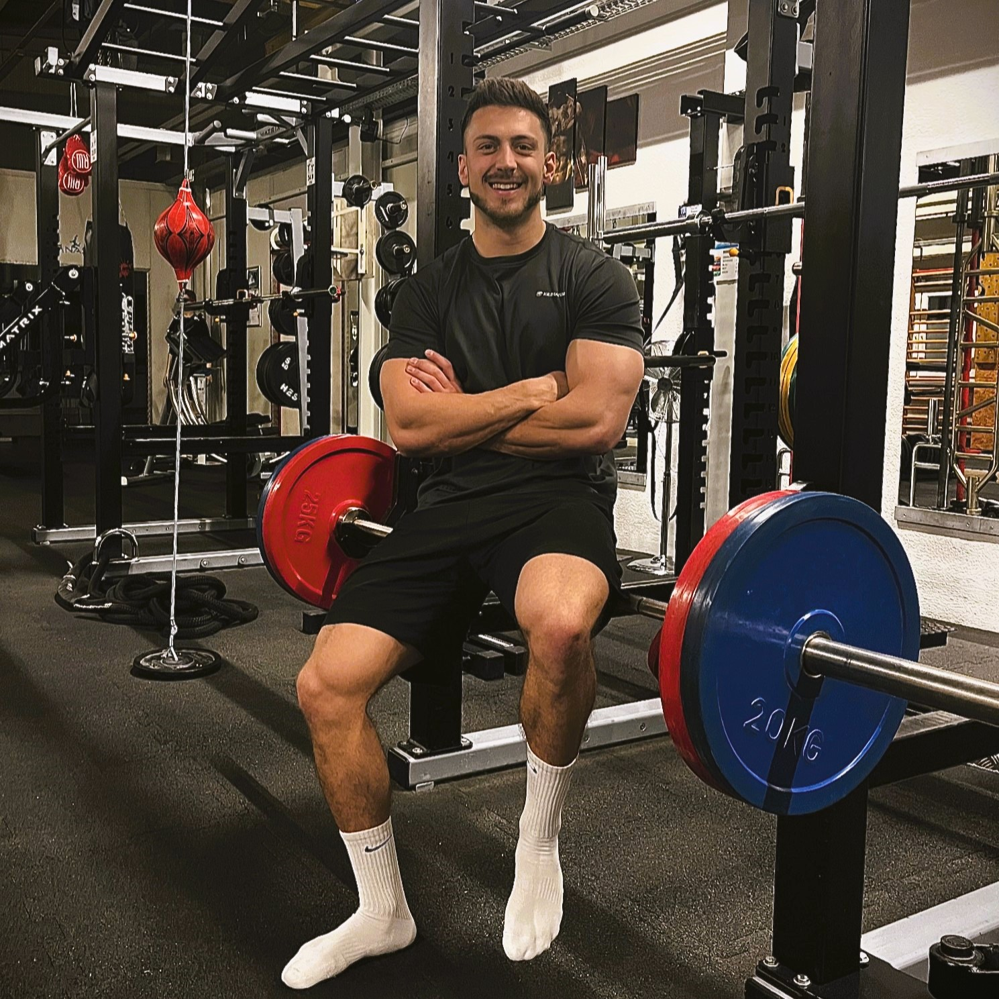
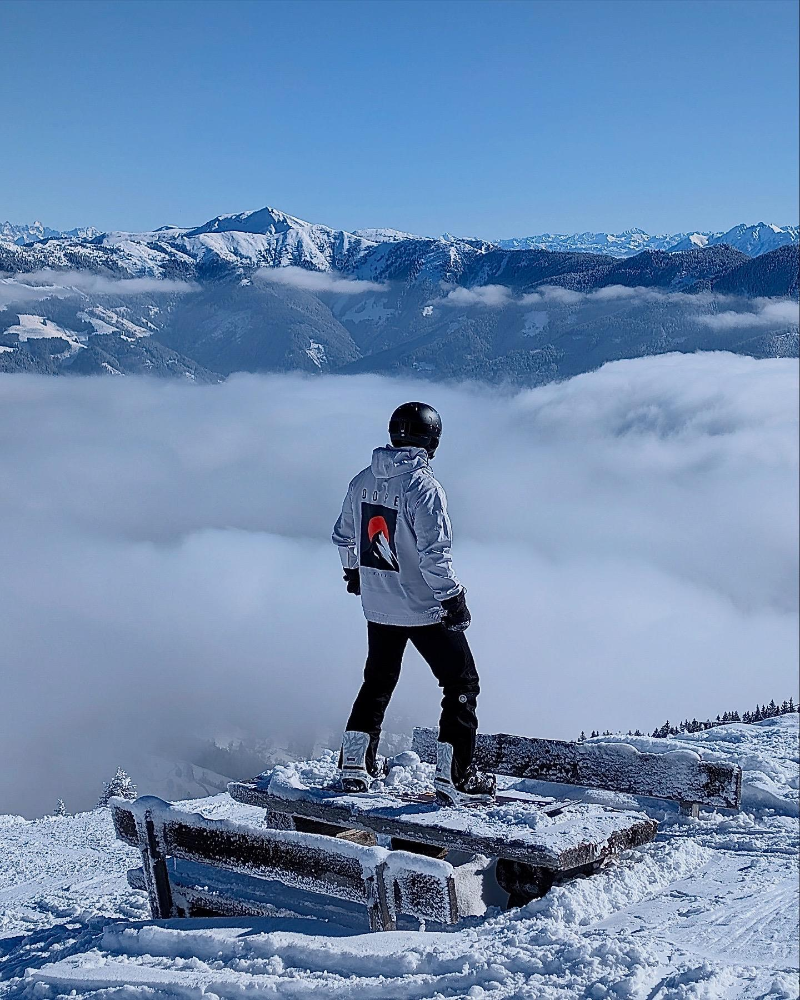

Hallo, mein Name ist Simon Wechdorn und ich bin 1999 geboren. Im Jahr 2024 habe ich den Bachelor-Studiengang Physiotherapie an der IMC- FH Krems mit ausgezeichnetem Erfolg abgeschlossen. Ich betreibe schon mein ganzes Leben unterschiedlichste Sportarten und konnte hierbei jede Menge Bewegungserfahrung sammeln. Dazu gehörte Faustball auf Bundesliganiveau und Tennis. In meiner Jugend entwickelte ich eine große Leidenschaft für den Kraftsport. Die gesammelte Erfahrung in diesem Bereich ist äußerst nützlich in Bezug zur medizinischen Trainingstherapie, da neben manuellen Techniken ein Großteil der therapeutischen Maßnahmen aus angepassten Mobilisations- und Kräftigungsübungen besteht. Daher war mir von Beginn an klar, mich in der Orthopädie, Traumatologie bzw. Sportphysiotherapie zu festigen. In der Arbeit als Physiotherapeut konnte ich mein Hobby zum Beruf machen!
